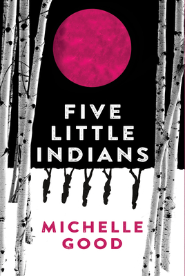
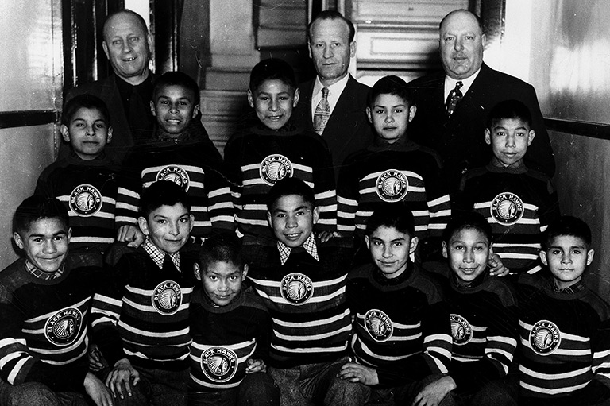

ENTJ
"Without language, even the wisest are rendered fools. Yet a fool fluent in language becomes a dangerous man; in the wrong hands, speech is a weapon."
I strike a rare balance between intense analytical rigor and highly disciplined creativity. I'm a Grade 11 student at Earl Haig Secondary School here in Toronto. I moved to Canada in May 2025, which has been a pretty massive shift.
When I'm not doing coursework for NBE3U1, I like to program, play strategy games, play shooter games, and read light novels. I also lift at the gym and get way too into the science of cooking, specifically pastry chemistry and molecular gastronomy.
Reflection 1
The Mastermind

This reflection connects deeply to the imagery of The REDress Project. Just as the red dresses symbolize the missing and murdered Indigenous women who were failed and exploited by society, Lucy's encounter with Walt the pimp in Vancouver mirrors this exact systemic vulnerability. Lucy narrowly escaped being sold, utilizing her quick thinking to survive a system designed to exploit her.
95 percent of humans live a happy life. This is false in the same way that society fakes its care for individuals. This is because society only cares about profits and the people who control society by creating laws. Lucy is an example of this fake care, and her story highlights how society stabs you in the back. But Lucy is not an ordinary woman. She is resilient and becomes a strong woman by the end of the story.
At the start of Five Little Indians, Lucy is gullible, stupid, and exploited. Her first traumatic experience was in the residential school, where she was sexually abused by a priest. When she tried to complain, she was punished, highlighting how society is always trying to protect the ones in power. This trauma left a scar on her life forever. It made her more anxious and caused her to count numbers in her head. However, she did not give up, even though there felt like no reason for her to live except to win the game of life.
Lucy’s next traumatic event happened in Vancouver when she was trying to go to Maisie’s apartment. Since she was clueless, she started asking strangers for directions, and in doing so, she encountered Walt, a pimp. He was the scum of the earth. He influenced and manipulated Lucy into thinking that he was taking her to Maisie’s residence, but in reality, he had just sold her body to an old, fat man. When Lucy realized that she was being sold as a prostitute, she thought quickly on her feet and saved herself by coming up with an excuse to go to the bathroom. Was her plan perfect? No. She was almost caught when she made a run for it, but it proves how much Lucy had evolved in this time frame to save herself from situations like these.
Her next experience is when she is in the hospital, helpless and bedridden. She finds out her daughter Kendra could be taken away, but Clara comes to the rescue with a plan. Clara takes Lucy away in a wheelchair and the baby in a stroller using fake identity cards before the government arrives. If someone were to evaluate every single incident where Lucy managed to save herself, they might say it was just because of her friends and imply it was plot armor. I debunk that theory. Ever since her first traumatic experience, Lucy has always had a keen eye to judge people's characteristics, act in an innocent manner, and easily gain the trust of others.
She used this ability in sync with her anxiety to map out the worst things that could happen in the future and then select the people she should be friends with. She did not like Kenny just because he sent motivating messages to her. Instead, she loved him because he was unwavering, strong, and resilient. She used him to protect her in future events. She also became friends with Clara because Clara was a resilient fighter who would never give up on her friends and would do anything to help them. Lucy knew all of this from the beginning, otherwise it would have been too perfect for events to go in her favor. Lucy was not lucky, but she forged her own luck. She did not use her anxiety as a fear of the future, but used it as a fortune teller.
All of these examples epitomize how Lucy is the mastermind behind this story. Lucy is not only a character with massive development, but she is also an inspiration to look up to. She did not give up in the roughest times of her life. She used these experiences to evolve and be better. She symbolizes how we should not give up but learn from our mistakes. She gives us the perfect guide to be the best version of ourselves, to keep evolving, and to never give up. There is more to life than just emotions, and the game of life itself is fun to play on our own terms.
Reflection 2
Feeling for Others
"I feel you" is just a phrase used by people to show empathy, but it is a simple, shallow, and heartless phrase. The phrase is about being merciful towards a person going through a rough patch. Not only that, it is a symbol of negligence in modern society. No one has the feelings or time to understand others, so they say this and move on. This is exactly how society moved on from Saul. To understand why this shallow empathy fails him, we first have to look at the depth of his trauma.
Just imagine this. It is a peaceful morning, and all of a sudden, a massive mechanical contraption never seen before roars as loudly as a lion. It also flies like a dragon and looks like it comes from hell to punish. Then tall men come down onto your settlement. They start shooting their guns, a type of weapon that silences everything around it. It deafens you and silences its prey. Finally, it is possible to see what these weapons could do in the blink of an eye, putting holes clean through bodies. People run in fear for their lives and lose their sanity as animal instincts kick in. All one can do is try to run away like a wild animal being hunted. This is what Saul and his family experienced when he was four years old and lost his brother. A child of that age will never ever be able to process it, ruining a part of him.
Since Saul lost his brother in such a traumatic event, he became less social because of the trauma and because there was no one his age to talk to. Later on in the story, Saul is caught too and put in a residential school. This is another traumatic event on its own because he lost his grandmother and parents in the process. This, combined with the previous trauma, compounded and turned his shyness into solitude. Since he was older and knew English, all he did was read novels, imagine stories and worlds, and think about "what ifs" to forget what happened. But he never could.
Later in the story, a "progressive" Father Lebouletier who is secretly a child molester comes into Saul's life. He sees Saul's weakness and uses it to get close to him. Moreover, he gives Saul a game to cope with to make Saul more dependent on him. Then, when the moment comes, he rapes Saul, breaking Saul's mind as he is betrayed. This mind-breaking trauma on top of past trauma completely breaks Saul's mental fortitude. At the pinnacle of his career, Saul gives into societal racism, which is the most trivial challenge in his life from an outsider's perspective, like his coach.
To be honest, Saul's coach really never cared about Saul as a human. He only saw him as a potential star player for his team. So when Saul faces racism, instead of trying to understand why he cannot overcome it, he gives Saul the same advice society uses: "I feel you." It is a shallow, ruthless, and heartless standard. This is what breaks many people like Saul because no one understands them. To save the "Sauls" in our modern, profit-oriented world, we have to take the time to try and understand a person's life before giving any advice or help. Letting people vent helps them. This is exemplified in Indian Horse when he shares his life with others at the New Dawn Center, which finally helps him.

Historical Indigenous Hockey ArchiveThis reflection is paired with archival photography of residential school hockey teams. It highlights the stark contrast between the sport as a coping mechanism and the reality of exploitation. Just as Saul’s coach saw him only as a potential star player rather than a traumatized human being, historical records showcase athletic achievements while ignoring the compounded trauma the children were subjected to behind closed doors.
Works Cited
Good, Michelle. Five Little Indians. Harper Perennial, 2020.
Wagamese, Richard. Indian Horse. Douglas & McIntyre, 2012.
The REDress Project. Image from National Museum of the American Indian.
Historical Indigenous Hockey Archive. Image from Canada's History.
Hearts of Iron IV Game Box Art. Image from Google Images.
Chess Representative Image. Sourced from Unsplash.
Call of Duty Warzone Game Box Art. Image from YouTube.
Elden Ring Game Box Art. Image from Amazon.
Age of Empires IV Game Box Art. Image from Google Images.
Reverend Insanity Light Novel Art. Sourced from Nischal Dawadi.
Lord of the Mysteries Light Novel Art. Sourced from ScreenRant.
That Time I Got Reincarnated as a Slime Light Novel Art. Sourced from Reddit.
Let's Connect